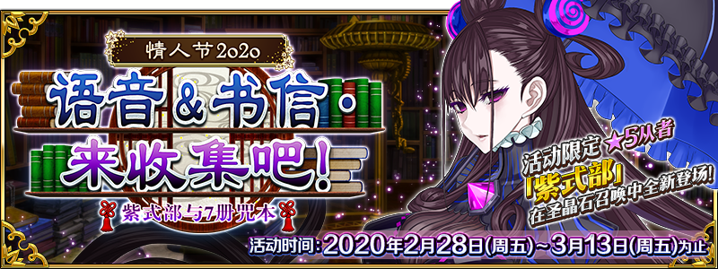

-
- ★☆★
- 本站與Mooncell合作共享資料，引用本站的翻譯請註明本站名稱或網址
本站不像其他網站可以分工合作統整資料
而是獨自一人憑藉熱忱製作分享
引用本站的翻譯請註明本站名稱或網址
-
- ★☆★
- 本週日版御主任務(5/11～5/17)
任務 獎勵 No.1：通過所有本週的御主任務 3No.2：擊倒8位從者 3No.3：擊倒任15名『Saber』『Rider』職階的敵人(從者及一部份Boss除外) 3No.4：擊倒任15名『Lancer』『Assassin』『Berserker』職階的敵人(從者及一部份Boss除外) 3No.5：擊倒任15名『Archer』『Caster』職階的敵人(從者及一部份Boss除外) 3No.6：靠戰利品獲得任2個「輝石」「魔石」「秘石」「銀棋」「金像」 3No.7：靠戰利品獲得任4個「輝石」「魔石」「秘石」「銀棋」「金像」 3
- ★☆★
- 【重要】Ver.1.11.0以後，關於從推薦環境以外的遊玩
-
- ★☆★
- 繁中(復刻夏日競賽)/簡中(語音＆書信)活動資訊頁面
測試頁面，不保證其後之維護
可在過去活動翻譯公告的活動概要區找到右側圖示連結到已建立的活動資訊頁面



- 4/2
- 關於4月8日(三)「Fate/Grand Order 迦勒底放送局 Vol.13 第2部 第5章 奧林帕斯 配信前夕SP」的播送
- 5/15
- 【來自迦勒底廣報局】關於5月的遊戲更新
- 5/3
- 期間限定活動「復刻:All信長總進擊 GUDAGUDA Final本能寺2019」舉辦！


| ・5/3遊戲更新(17:00實施) |
◆從者◆
・新增技能解放


・新增寶具解放

・新增寶具解放
- 4/29
- 「2000萬DL突破宣傳活動」


| ・關於「迦勒底放送局 臨時輕量版」發表的新情報 | ・關於能用5月交換券(2020)交換的道具 | ||
| ・4/25遊戲更新(19:00實施) | ・4/29維修公告(12:00實施) | ||
◆概念禮裝◆
・新增概念禮裝

◆指令紋章◆
・新增指令紋章

◆活動相關◆
- 4/9
- 第2部 第5章「Lostbelt No.5 星間都市山脈 奧林帕斯 擊落神之日」開幕！


| ・關於「迦勒底放送局 Vol.13」發表的新情報 | |||
| ・4/9遊戲更新(17:00實施) | ・4/16遊戲更新(17:00實施) | ・4/20遊戲更新(17:00實施) | |
◆從者◆
・新增從者


◆概念禮裝◆
・新增概念禮裝


◆隱藏數值◆
・新增新職階
・新增Lostbelt No.5(奧林帕斯)敵人
・新增Lostbelt No.5(奧林帕斯)敵人
- 3/25
- 期間限定活動「復刻版:Apocrypha/Inheritance of Glory -Triumphal-」


| ・關於「迦勒底放送局 臨時輕量版」發表的新情報 | ・關於能用4月交換券(2020)交換的道具 | ||
| ・3/22遊戲更新(16:00實施) | ・3/25維修公告(12:00實施) | ・4/2遊戲更新(17:00實施) | ・4/6維修公告(12:00實施) |
◆從者◆
・新增技能解放


|
|